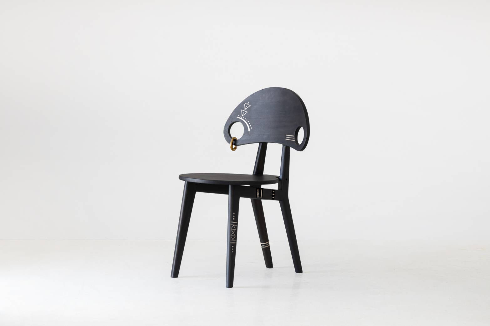
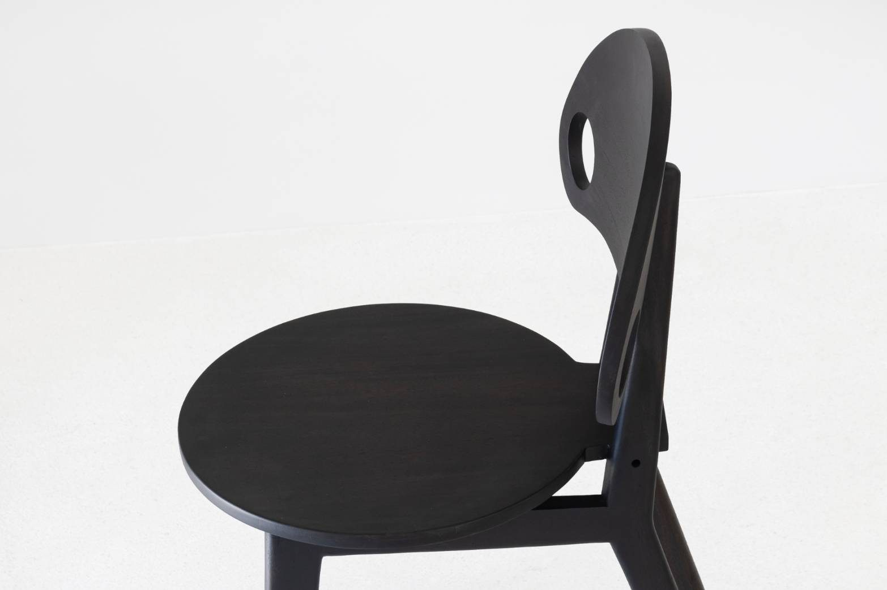
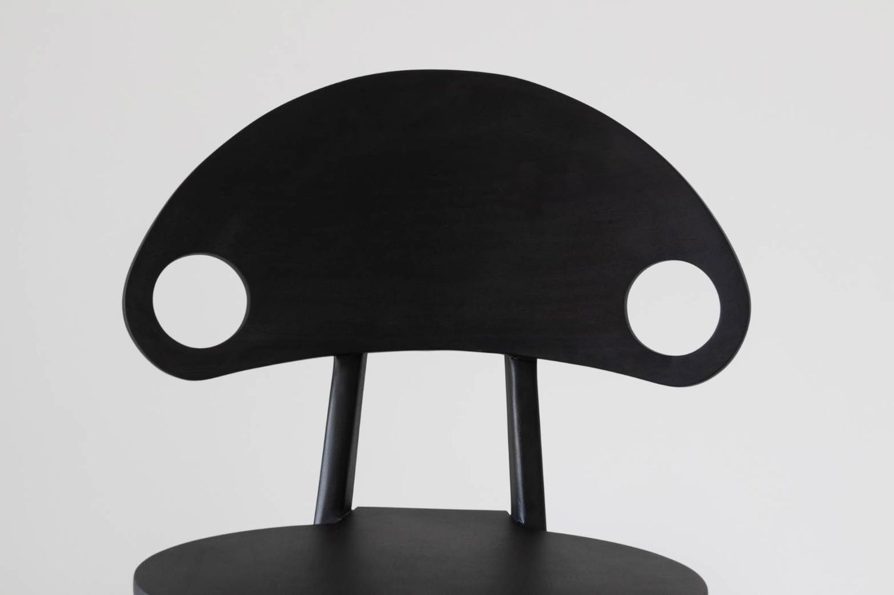
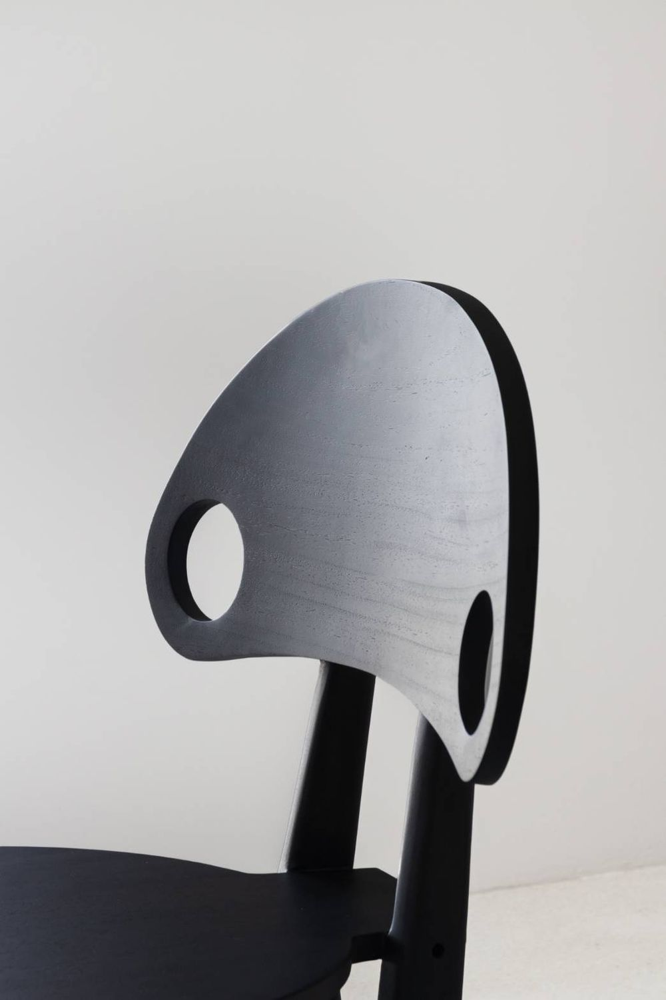
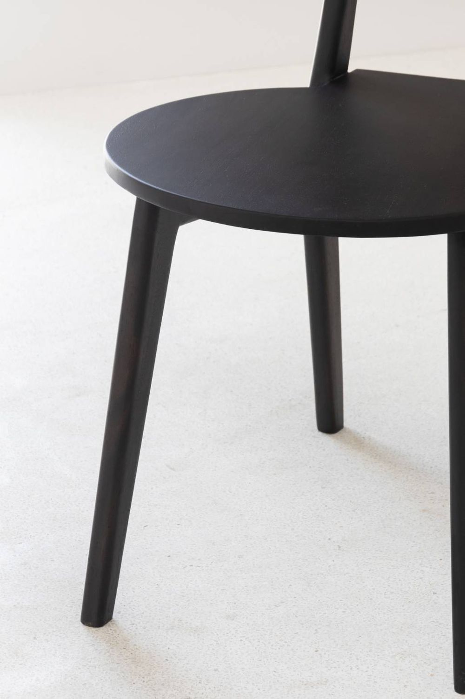
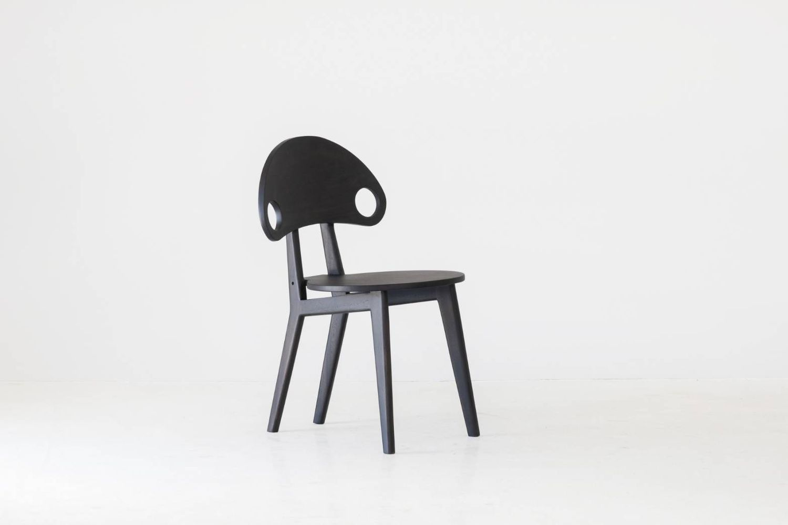
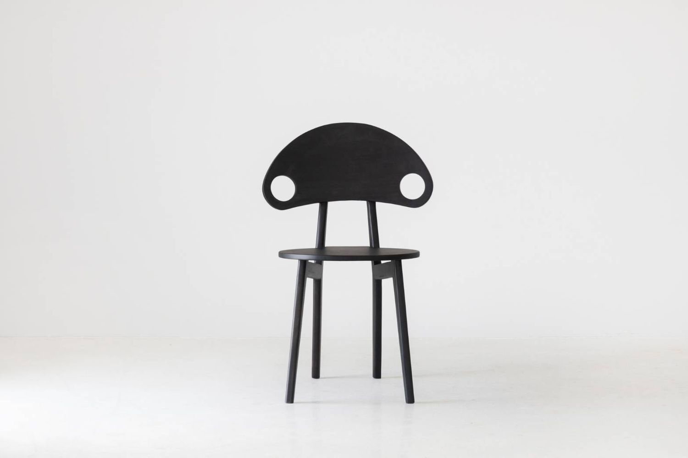

WORK 06 / 29
Tribal Chair
An exploration of furniture as personal expression and adornment.
Year2022
MaterialsChanchuri
StagePrototype

DESIGN STORY
Tribal Chair explores the relationship between furniture, the body and personal adornment. Its dark timber frame is spare and contemporary, while tattoo-like markings and a brass ring introduce a more intimate, expressive language. These details suggest the chair as something that can be marked, worn and personalised—blurring the boundary between functional object and an extension of the body.
PROJECT LINKS
- Moonlerwww.moonler.com
PROJECT DETAILS
- Brand / Manufacturer
- Moonler





